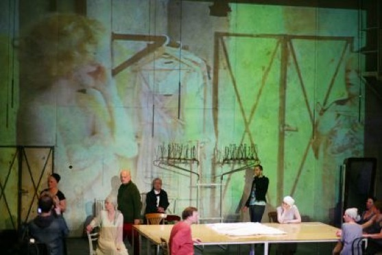
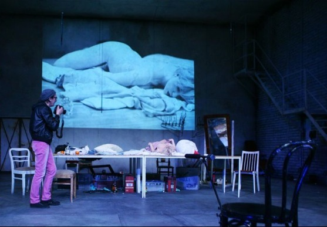

copyright by Jan Lubicz Przyluski - All Rights Reserved




Piotr Skiba i Sandra Korzeniak, fot. Katarzyna Pałetko
Scena “Sen”
Ostatnia scena, przed finałem
Persona - Marylin
2009
video i instalacje video w spektaklu Krystiana Lupy